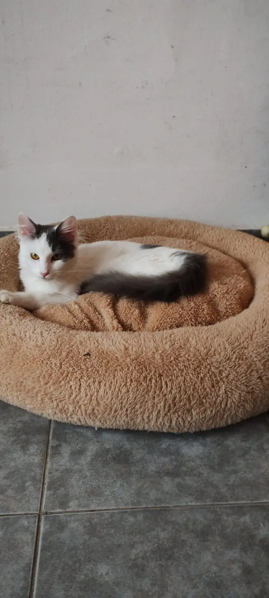
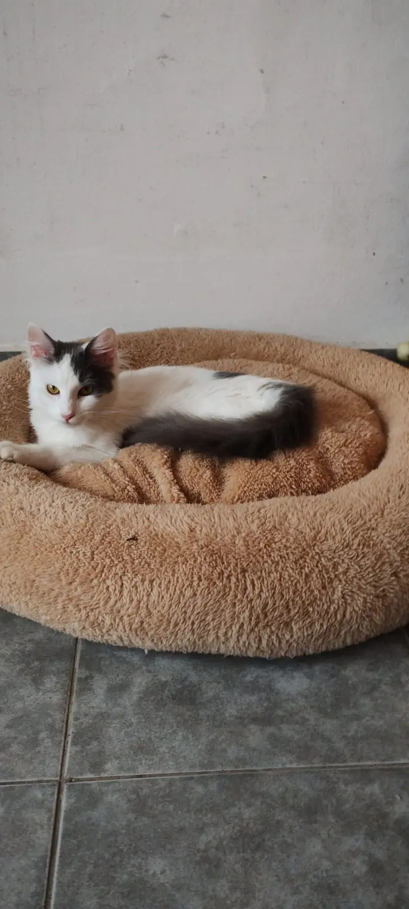

Guardería de Gatos en Buenos Aires | Guardería Tatos
El mejor lugar para cuidar a tu gato en Capital Federal. Ambiente seguro y divertido. ¡Contáctanos y conoce nuestros servicios y requisitos!
Nos encanta cuidar a estos adorables michis y ofrecerles un hogar temporal lleno de amor y diversión. Somos una guardería de confianza para muchas familias, ¡esperamos serlo para la tuya también!
 

¿Los gatos estan acompañados en la guarderia?
Guarderia Tatos es un ambiente familiar, recibimos a los pensionados en nuestro hogar, convivimos con ellos y lo supervisamos las 24hs. Nos preocupamos por generar un vinculo con cada huesped para ayudarlos en su proceso de adaptacion y de ser necesario en la socializacion con los compañeritos de estadia.
¿Que incluye la estadia?
Incluimos: alimento de alta gama Royal Canin weight control castrados / KItten , piedritas sanitarias Rubicat premium y Snacks (varia: alimento humedo, creamy, sobrecitos, pollito, carne, atun natural)
¿Como puedo reservar?
Para reservar se debe señar con el 25% del valor total de la estadia.
¿Cómo manejan la alimentación en la guardería para gatos?
Les ofrecemos una estadía completa que incluye alimento de alta gama, como Royal Canin Weight Control para gatos adultos y la línea Kitten para gatitos. También les brindamos snacks variados, que incluyen pollito, sobrecitos de alimento húmedo, atún al natural, entre otros.
¿Como es la seguridad de la guarderia?
Contamos con redes de protccion de alta calidad para evitar el acceso al exterior. Ademas, tenemos camara de seguridad que nos permite vigilarlos desde otra habitacion brindandoles el tiempo y espacio que necesiten para explorar durante su adaptacion.
Horario de contacto
Tenemos un amplio horario de contacto. Los reportes y videos se envian una vez a dia. En caso de emergencia o tratamiento de veterinaria los reportes y videos se envian continuamente.
¿Con cuantos gatitos va a convivir en la guarderia para gatos?
Ofrecemos unicamente espacios compartidos, hasta 10 gatos por fecha, por esta razon solo recibimos gatitos de temperamento bajo que puedan socializar tanto con humanos como con otros gatos.
Mi gato nunca convivio con otro gato¿Lo pueden recibir?
Escribinos por WhatsApp para evaluar su caso y poder ofrecerte la mejor opcion para tu gato.
¿Mi gato se puede adaptar a la guarderia?
Todo va a depender de la personaliad de tu gato, escribinos por Whastapp para evaluar su caso y ofrecerte la mejor opcion.
¿Tienen veterinaria para las emergencias?
Si. Contamos con nuestra veterinaria de confianza a dos cuadras de nuestro domicilio que tienen un amplio horario de atencion y el manejo adecuado en felinos. Tambien contamos con una veterinaria 24hs cerca de nuestro domicilio de ser necesario. Una vez atendido el paciente, se comparte la historia clinica con el tutor para que pueda leer en detalle el diagnostico del profesional. Los gastos veterinarion corren por cuenta del tutor.
¿Como se manejan en caso de emergencia?
Es de suma importacia para nosotros poder tener contacto con los tutores. Entendemos que hay destinos donde no hay buena señal, por esto pedimos un numero de contacto alternativo para poder comunicarnos en caso de no tener respuesta del tutor. Cualquiera sea la emergencia nos contactamos de manera inmediata con el tutor para dar aviso de lo sucedido y respetar la dedicion del tutor ya sea observacion o ir a una consulta con nuestra veterrinaria de confianza.
¿Ofrecen habitacion individual?
No. Nuestra esencia como guarderia es que se sientan como en sus casas y que puedan utilizar todos los espacios sin ningun problema. Entendemos que hay gatitos que necesitan habitacines individuales pero por el momento no ofrecemos ese servicio.
¿Que metodos de pago tenemos en la guarderia?
Podes abnar en efectivo, tranferencia o con tarjeta de credito Este es el contenido de la Sección 3. Añade aquí el contenido que deseas mostrar en esta sección.
Si cancelo la estadia ¿Hacen devolucion de la seña?
Solo se hace la devolucion de la seña si las virales son positivas.